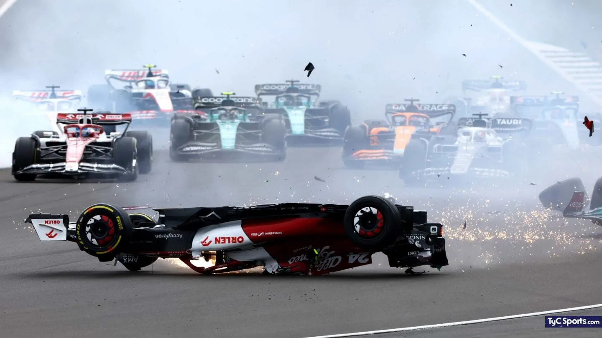

El Cavallino Rampante abre la nueva era de la F1 con un doble podio
Un gran comienzo para el equipo mas veterano de la F1, y es que no se habia visto un uno-dos de la escuderia italiana en mas de 5 años. Sin lugar a dudas un comienzo inmejorable para conciderando que ninguno de los toros pudierno teminar la carrera.
Podio doble de los toros en la casa de Ferrari
Luego de una intenza lucha en pista, y un desafortunado error del piloto de Ferrari los toros se hacen con los dos primera plazas en la casa de los Tifosis, lo peor si cabe es que estos no llegaron ni siquiera a un tercer puesto. Este es el primer uno-dos del equipo de la bebida energuetica con esta aliniacion de pilotos, y el primero en mas de 3 años

Luego de una aparatoza salida el ingles George Russell (piloto de mercedes), se estrella contra el piloto de Alfa Romeo Guanyu Zhou haciendolo girar y posteriormente volcarse, por razones que nunca fueron aclaradas del todo, la barra anti buelcos se undio en el chasis evitandole hacer su funcion y dejando solo el halo como seguridad del piloto. Lo pero es que al llegar dado buelta a la primera curva, la graba de la escapatoria proboco que el auto comenzara a girar y luego fuera lanzado por sobre la balla de contencion y siendo detenido por las rejas de seguridad para los espectadores, a escasos metros de los mismos, a mas de 200Km/hs. Afortunadamente el pilotos chino solo sufrio un leve sequinze y nadie del publico sufrio herida laguna, pero sin lugar a dudas este a sido el pero accidente desde el de Romain Grosjean en el 2020
Retirada de Sebastian Vettel
La retirada del 4 veces campeon del mundo Sebastian Vettel nos llego a mitad de temporada, detonando asi el mercado de pilotos. Pero lo importante de la noticia es la perdida para la parrilla de semejante figura y modelo humano como lo es el que fue el protejido de Michael Jumajer, sin lugar a dudas la categoria a perdido uno de sus mas grandes talentos, no solo de esta temorada si no de toda la historia de la categoria
Max verstapen se corona en Japon
A falta de 4 carreras la temporada se define coronando a un nuevo bicameorn en la categoria, y es que despues de una carrera parada por las lluvias, Max Verstappentermina coronado en la tierra del sol naciente y la casa de honda, sin lugra a dudas una de las temporadas mas dominantes porparte de los toros y por el piloto Nederlandes